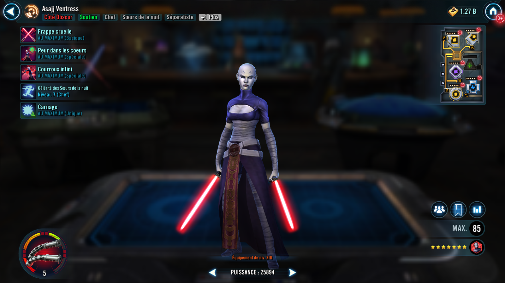
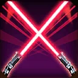
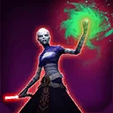
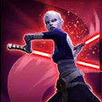

Asajj Ventress
Nightsister controller with healing who generates attack power as characters are defeated
Nightsister controller with healing who generates attack power as characters are defeated


Deal Physical damage to target enemy with a 50% chance to Stun for 1 turn.

Dispel all buffs on all enemies and Nightsister allies recover 40% Health. For each buff dispelled, that enemy has a 50% chance to lose 20% Turn Meter and Nightsister allies recover 10% Health. This attack can't be Evaded or Resisted.

Deal Special damage to all enemies and inflict Defense Down for 2 turns. Refresh all cooldowns on a finishing blow.
Nightsister allies have +30 Speed, +30% Offense, gain 50% Turn Meter when they fall below 100% Health, and have a 50% chance to remove 20% Turn Meter when they damage an enemy. This Turn Meter removal can't be Resisted.
When any ally or enemy is defeated, Asajj gains 35% Turn Meter, and, gains 15% Offense, 15% Critical Chance, and 5% Max Health (stacking) until the end of the encounter. Asajj has +15 Speed for each enemy with no buffs.
Omicron Boost : While in Grand Arenas: Nightsister allies gain 30% Max Health, Potency, and Tenacity. When any ally or enemy is defeated, all Nightsister allies gain 10% Turn Meter, recover 25% Protection, and the cooldown of Endless Wrath is reset. When Asajj uses Endless Wrath, inflict Healing Immunity on all enemies for 2 turns and reduce their Defense and Max Health by 4% for the rest of the encounter (excludes Galactic Legends). Asajj has +10% Critical Damage for each enemy with debuffs.